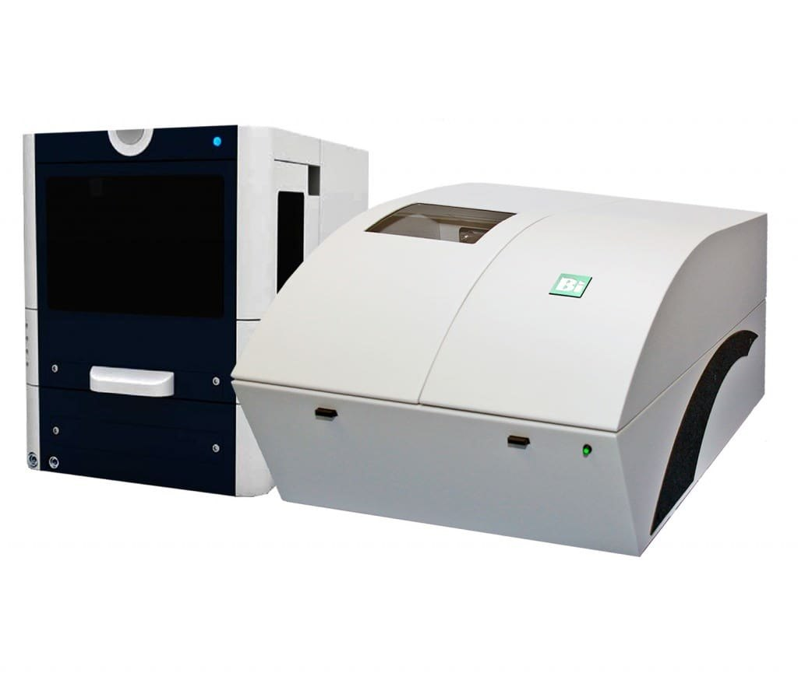
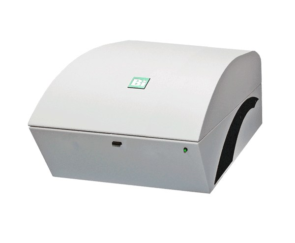

Scientific Equipment
Biosensing Instrument · SPR analysers
We distribute advanced scientific equipment: SPR (Surface Plasmon Resonance) analysers from Biosensing Instrument. Our products are used both in industry and in scientific research.
- BI-4500 · BI-2500
- 5 & 3 microfluidic channels
- 2016 R&D 100 Award

Surface Plasmon Resonance (SPR)
Surface Plasmon Resonance (SPR) is a physical phenomenon that occurs when a polarised beam of light strikes a metal surface at an angle greater than the critical angle that meets the conditions for exciting resonance.
It has been found experimentally that even very small changes on the gold surface, such as the adsorption of single molecules, change the resonance conditions. It is this property that makes the technique useful for measuring interactions at the molecular level.
BI-4500 Series
The 5-channel SPR instrument, when paired with the BI Autosampler, offers an ideal solution for high-throughput assay development, combining efficiency with low operating and maintenance costs. Featuring advanced BI-DirectFlow™ technology, integrated into the BI-4500 system, it ensures precise sample delivery for exceptional binding kinetic measurements.
- High throughput – 5 channels
- High measurement sensitivity (<100 Da)
- Works with the autosampler
- Compatible with gas and electrochemical modules

BI-2500 Series
This 3-channel SPR system is the preferred choice for advanced biosensor research, including cancer biomarker detection, aptamer development, environmental monitoring, and food contamination analysis. Its open-design architecture, combined with integrated electrochemistry and chemical vapour analysis modules, provides a flexible platform with a clear upgrade path for electrochemistry SPR and gas SPR combination studies.
Request a quoteAnalysis modules
The SPR system from Biosensing Instrument is module-based, designed for flexibility and versatility. Interchangeable analysis modules allow users to easily switch among fluid injection, electrochemical and gas phase detection applications.
- BI-DirectFlow™ module – supplied as standard with BI-4500 series instruments or higher
- Flow Injection module – supplied with BI-2500 series instruments
- Gas SPR module – optional, compatible with all SPR analysers made by Biosensing Instrument
- EC-SPR module – optional for the BI-2500 and BI-4500 series
- EC-DualFlow™ module – optional for all SPR analyser models
Accessories: BI-Autosampler, Gas Dilutor GD-100 and sensor chips.

Applications
Life Science
Protein, DNA and drug interaction studies, real-time monitoring of gene expression and the development of new, effective drugs.
Electrochemical Measurements
Real-time analysis of processes such as stripping voltammetry, electropolymerisation, reduction and oxidation.
Gas and Chemical Vapour Analysis
Analysis of processes at the solid–gas interface and detection of toxic molecules.
Environment and Food
Detection of trace heavy metals in water, food analysis for harmful substances and detection of toxic molecules in the air.